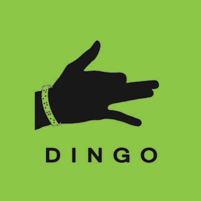

Mikaël
Your Company Name Here
- Build a strong UX team
- Uplift product excellence
- Design accessible products
- Get ahead of the competition
Near Future
- First AI generated ad formats
- Over 30 sucessful launches
- 18 patents
- 3000 UX and accessibility students
- UX championing
- Mentorship
August 2015 - March 2024

Dingo
- User centric UI for blind users
- First self learning gesture keyboard
- Braille 2.0
March 2018 - November 2018
Monitise
- Standardized workflows
- Automated asset creation
- Product modularity
- Front end re-skinning framework
July 2013 - August 2015
Ancoon Design
- UX consulting
- Brand building
- Marketing
January 2011 - August 2015